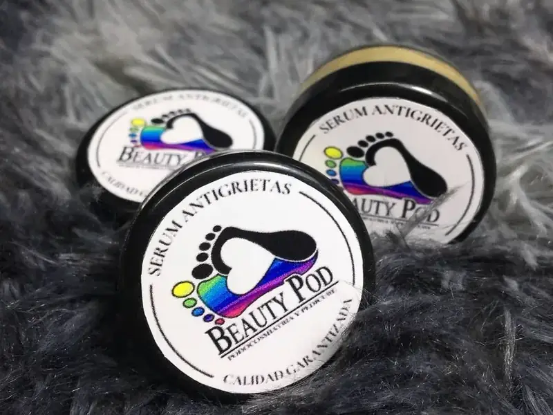

Un sérum para cerrar grietas y fisuras
El Sérum BioRegenerador Epidérmico es una fórmula avanzada de BeautyPod para el cuidado integral de los pies, creada especialmente para ayudar a cerrar las grietas y fisuras de la piel.
Combina ciencia y naturaleza para ofrecer hidratación profunda, suavidad emoliente, protección antioxidante y acción antiinflamatoria, dentro de un tratamiento acompañado por el podólogo.

Sobre el Sérum BioRegenerador
Enriquecido con aceites grasos y retinol, este sérum relipidiza y fortalece la barrera cutánea, sustituyendo los lípidos fisiológicos y promoviendo la regeneración celular.
Su fórmula también ofrece protección UV natural, que ayuda a prevenir los daños causados por el sol y a mantener una piel saludable. Está pensado para todo tipo de piel y para quienes buscan una piel más hidratada, suave y protegida.
Acción integral: hidratación, reparación de la barrera cutánea y acción antiinflamatoria,
junto con limpieza podológica periódica.
— Linet R. Vega
Ficha del producto
Talones
Sérum BioRegenerador Epidérmico
Tratamiento para talones agrietados y secos. Hidrata y regenera la piel.
Escríbenos por WhatsApp para consultar el precio y la disponibilidad.
Pedir por WhatsApp (se abre en una pestaña nueva)Indicaciones
- Xerodermias (piel muy seca).
- Cierre de grietas y fisuras en la piel de los pies.
Si quieres entender mejor por qué aparecen, lee nuestros artículos Durezas, grietas y resequedad y Talones agrietados desde adentro.
Mecanismo de acción
Colágeno y elastina
Estimula su producción y promueve la cicatrización de la piel.
Control de la queratina
Ayuda a controlar la sobreproducción de queratina, que puede formar callosidades e interferir con la cicatrización.
Circulación
Mejora la circulación sanguínea en la zona afectada, aportando nutrientes y oxígeno para reparar el tejido.
Inflamación y dolor
Reduce la inflamación y el dolor asociados con las grietas y fisuras.
Barrera cutánea
Relipidiza y fortalece la barrera de la piel con aceites grasos y retinol.
Protección
Aporta protección antioxidante y protección UV natural.
Administración y posología
- Preparación: lava y cepilla la zona afectada y déjala húmeda.
- Aplicación: aplica una capa fina del sérum en la zona afectada y masajea suavemente.
- Frecuencia: puede aplicarse una o dos veces al día.
- Duración: continúa el tratamiento hasta que la fisura o grieta haya cicatrizado y finalice la fase de regeneración y reestructuración de la capa córnea.
La limpieza podológica forma parte del tratamiento: se realiza cada 15 a 21 días, según la gravedad que estime el especialista. Es necesaria para mantener una generación constante de tejido de granulación, que la lesión se selle de las capas profundas a las superficiales y se evite la formación de tejido hiperqueratósico.
Qué esperar del tratamiento
La recuperación depende de la gravedad de las lesiones, de la disciplina entre sesiones y de la constancia en la aplicación del tratamiento. La media de curación está entre 6 y 8 sesiones, manteniendo las limpiezas cada 15 a 21 días.
Contraindicaciones
- Alergia a cualquiera de los ingredientes del sérum.
- Tinea pedis o interdigital (hongos en la piel del pie). Más información.
- Eccema dishidrótico.
Precauciones
- Evita el contacto con los ojos, la nariz y la boca.
- Mantén el sérum fuera del alcance de los niños.
- No exfolies la piel a no ser que la especialista lo indique.
Recomendaciones
- Para una evolución favorable, la limpieza podológica de la grieta o fisura debe hacerla un profesional.
- En casos más graves, el especialista puede indicar sesiones cada 7 días en las primeras fases del tratamiento.
- Puede utilizarse junto con terapias coadyuvantes que mejoran la eficacia del tratamiento, como la terapia de luz roja, la iontoforesis o la termoterapia con parafina.
Lo más importante
Cerrar una grieta o fisura requiere constancia y acompañamiento profesional. El Sérum BioRegenerador Epidérmico trabaja la hidratación, la barrera de la piel y la cicatrización, y rinde mejor cuando se combina con la limpieza podológica periódica y la disciplina en la aplicación.
Mira el producto en nuestra tienda, conoce todo lo que tratamos en la página de podología o lee más en el Blog de BeautyPod.